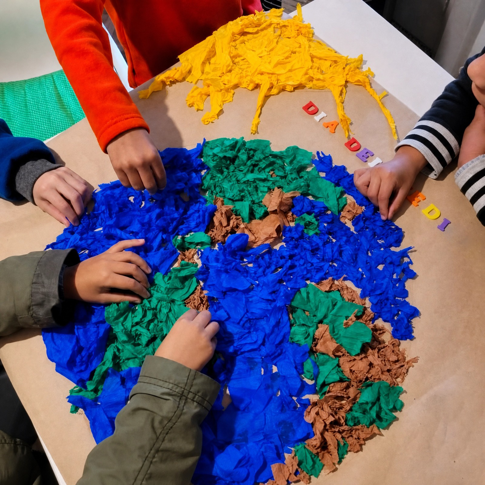
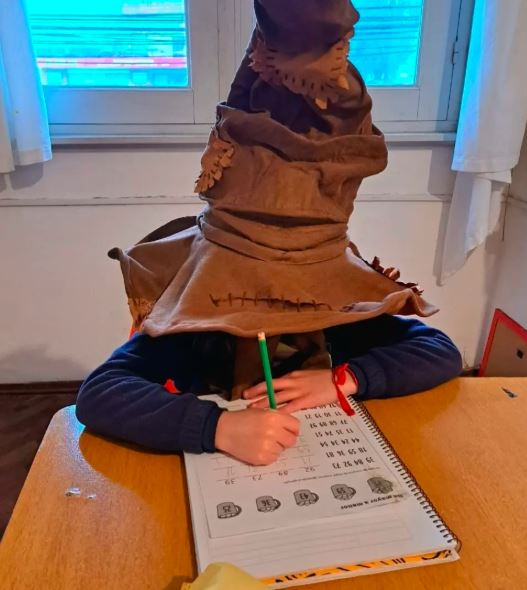
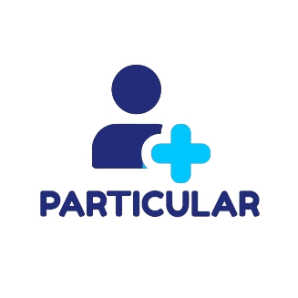

Psicopedagogía
Acompañamiento de los procesos de aprendizaje, respetando los tiempos y necesidades de cada niño o adolescente.
Conocer másAcompañamos el desarrollo de niños y adolescentes desde una mirada integral, cercana e interdisciplinaria.

En Ykére trabajamos desde una mirada interdisciplinaria, entendiendo que cada niño, adolescente y familia tiene una historia y necesidades particulares.
Nuestro propósito es generar espacios de atención, aprendizaje y acompañamiento donde diferentes profesionales puedan trabajar de manera coordinada, cercana y personalizada.
Trabajamos de manera interdisciplinaria, integrando diferentes especialidades.
Acompañamiento de los procesos de aprendizaje, respetando los tiempos y necesidades de cada niño o adolescente.
Conocer másAbordaje del desarrollo corporal, emocional y relacional a través del movimiento y el juego.
Conocer másEspacios de escucha y acompañamiento emocional para niños, adolescentes y sus familias.
Conocer másEvaluación y acompañamiento del lenguaje, habla, comunicación y otras funciones vinculadas.
Conocer másEvaluación y seguimiento especializado en salud mental durante la infancia y adolescencia.
Conocer másAcompañamiento para favorecer autonomía, participación y desempeño en actividades de la vida cotidiana.
Conocer más

✦Diferentes profesionales trabajan de forma coordinada para comprender cada situación desde múltiples perspectivas.
Construimos vínculos de confianza con niños, adolescentes y sus familias.
Cada proceso se piensa de acuerdo con las necesidades particulares de cada persona.
Los espacios de Ykére están preparados para favorecer el juego, el encuentro, el aprendizaje y el desarrollo.
Cómo llegarConocé a las personas que forman parte del Centro Interdisciplinario Ykére.
Psicología, psicopedagogía, psicomotricidad, fonoaudiología, psiquiatría infantil y terapia ocupacional.


Encontrá el Centro Interdisciplinario Ykére y consultanos para coordinar una entrevista o conocer nuestros servicios.
José Batlle y Ordóñez 2390
ContactanosPonete en contacto con nuestro equipo para recibir información sobre servicios, profesionales y modalidades de atención.
Escribinos por correo YKERE13@GMAIL.COM